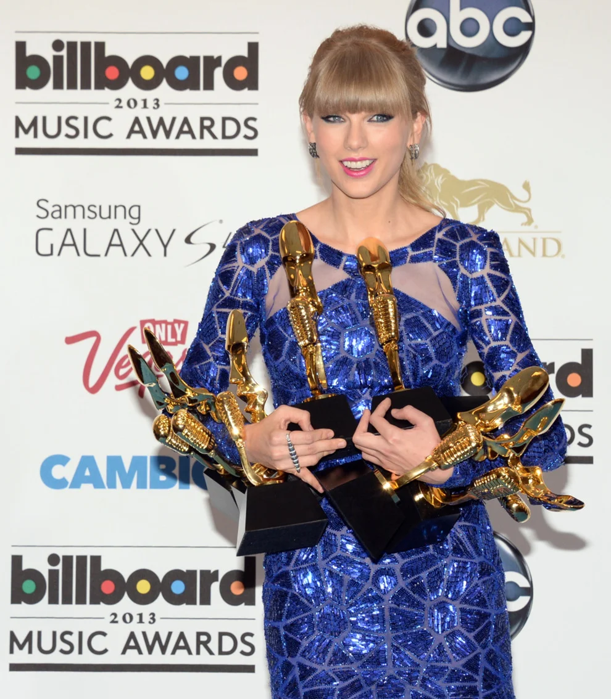
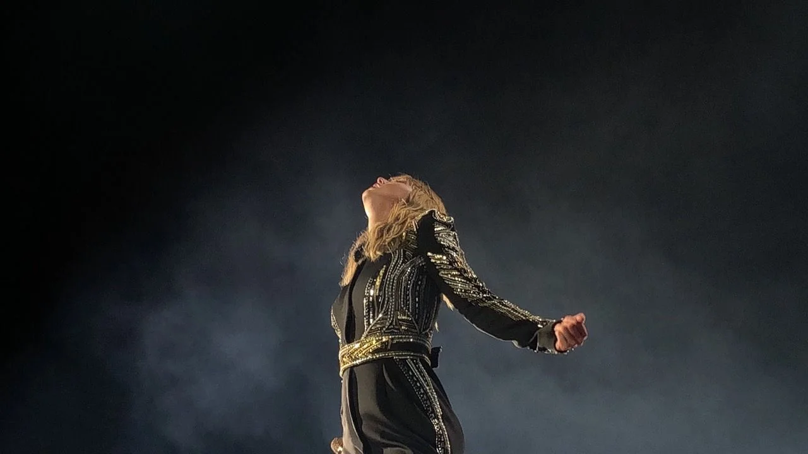

Historia
Con apenas 17 años de edad, Taylor Swift publicó su primer álbum de estudio, el cual fue homónimo. Éste contiene aclamadas canciones como Should’ve Said No, Teardrops on My Guitar, Tim McGraw y Picture to Burn. Sin embargo pese a estar nominada como artista revelación ese año no recibió el reconocimiento de la industria
Muy poco tiempo después, el reconocimiento mundial llegaría con Fearless, disco en el que disfrutamos de sencillos como Fifteen, Love Story, You Belong with Me y White Horse. Éste fue merecedor de un Grammy, un American Music Award y un Country Music Association Award, en la categoría de Álbum de Año. La artista también ganó otros tres Grammy en las categorías de Mejor Interpretación Femenina de Country, Mejor Álbum Country y Mejor Canción Country. También durante la Ceremonia de los MTV Video Music Awards al recoger su galardón sufrió un momento que marcaría su carrera que podemos ver en la sección de Noticias.

Después de dos años de arduo trabajo, la cantante publicó su tan esperado tercer álbum de estudio, Speak Now.Con éste, Taylor Swift rompió el récord de su admirada Shania Twain, del álbum más vendido de la historia del country en su semana de estreno.
La estrella quiso hacer algo distinto con su próximo material discográfico, Red, que fue el segundo álbum más comercializado en la historia musical de los Estados Unidos, después de Oops!… I Did It Again de Britney Spears. El disco recibió dos nominaciones al Grammy en las categorías de Mejor Álbum Country y Mejor Álbum del Año
Taylor se inspiró en el año de su nacimiento para colocar el nombre de su siguiente álbum, 1989, considerado una de las joyas POP de la epoca. A raíz de la publicación de dicho album y diversas polemicas. Taylor se retira de la musica durante varios años.
Reaparece con su entonces nuevo material discográfico, Reputation, en el que plasma sus sentimientos sobre su reputación, la crítica de la prensa especializada y el rechazo a los malos comentarios por parte de sus haters

Posterior a este album todos los siguientes son de su propiedad
intelectual, ya que fueron publicados bajo un sello discográfico
distinto al que luego se vendería su propiedad. LOVER su septimo
trabajo de estudio, es una oda al amor y a su epoca pop. Mientras que
Folklore y su ''hermano menor'' Evermore, son un cambio de registro al
indie y a una melodia distinta centrada más en la lirica de la
historia contada en ambos discos.
Posterior a esto, Swift
publica unicamente dos de sus discos re grabados, Fearless y Red,
añadiendo la etiqueta Taylor's Version para indicar
que son de su propiedad.
14.09.2009
VMA's 2009Kanye West irrumpe en el escenario mientras Taylor recoge el que seria uno de sus primeros grandes premio. West se encontraba indignado ya que creia que su compañera de profesión, Beyonce, merecía más el premio que Taylor así que procedió a arrebatarlo de las manos de la joven cantante. Hecho que generó un futuro de conflictos entre ambos.
Leer más27.07.2014
Taylor Swift. La industria musicalBarbara Walters, una de las periodistas mas influyentes del panorama estadounidense, elogia la carrera de Swift y su constante evolución, para acabar diciendo que su carrera representa la meta de lo que para todos los demas artistas deberia ser ''la industria musical''' ..
Leer más07.10.2020
Re-Recordings. Una lucha por su propia obreTras una ardua pelea legal, Swift no tiene los derechos de las canciones originales, pero puesto que es ella quien las escribe, tiene los derechos de autor de sus composiciones, por lo que, al ser propietaria de sus composiciones, puede volver a grabar las canciones con su nueva firma discografica y recuperar su obra.Esto es lo que hará desde 2020 hasta que cuente con la propiedad de todas sus canciones.
Leer más